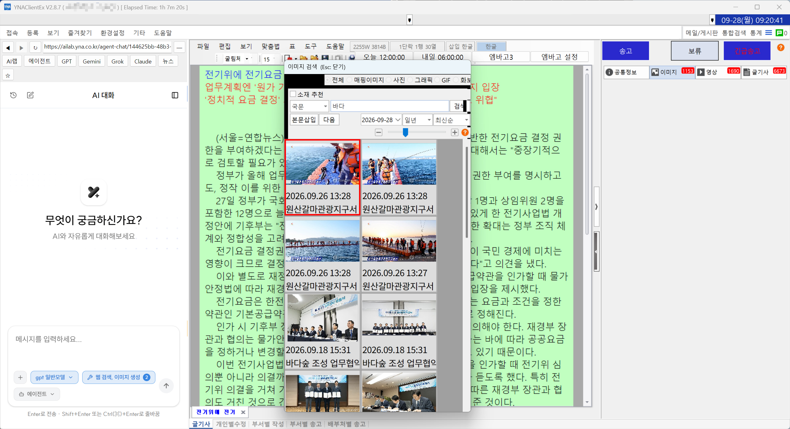

안내 작동 범위
연합뉴스 작성기(YNAClientEx)에 맞춰 만들었습니다. 대치어·괄호 자동 닫기 등 입력 기능은 작성기 안에서만 동작합니다.
기사 쓸 때 귀찮은 부분을 해소합니다
YNA 클라이언트 보조 도구입니다. 5.0에서는 작성기 옆에서 바로 쓰는 AI 웹 패널, 클릭 한 번으로 엠바고 설정, 커서 옆에서 이미지 검색 기능이 추가됐습니다. 무엇보다 속도와 안정성을 크게 손봤습니다.
다운로드버전 5.0.0.0

작성기를 떠나지 않고, 손이 덜 가게
AI 웹 패널
작성기 왼쪽 ‘화면목록’ 자리에 웹 패널이 뜹니다. ChatGPT·Gemini·Grok·Claude와 연합 AI랩·에이전트 채팅, 네이버 뉴스를 작성기 옆에서 바로 쓸 수 있습니다.
단축키Ctrl+Alt+W (열기/최소화)
엠바고 버튼
작성기 도구모음 오른쪽에 [엠바고1][엠바고2][엠바고3][엠바고 설정] 버튼이 붙습니다. 자주 쓰는 엠바고(오늘/내일 + 시각)를 저장해 두면 클릭 한 번으로 엠바고가 입력됩니다.
커서 옆 이미지 검색
본문에서 ##을 입력하면 이미지 검색 창이 커서 옆에 팝업으로 뜹니다. 검색 언어는 자동으로 국문, 사진을 더블클릭하면 본문에 들어가고 창은 원래 자리로 돌아갑니다. 공통정보·영상 탭에 있어도 알아서 이미지 탭으로 바뀝니다.
단축키## · 닫기 Esc
문단 선택
커서가 있는 문단 전체를 한 번에 선택합니다. AI 질의응답과 번역도 이제 이 방식으로 문단을 정확히 잡습니다.
단축키Ctrl+Alt+J
5.0에서 멈춤·재시작·메모리 문제를 우선 손봤습니다.
연합뉴스 작성기 도우미 사용 모습입니다
AI 통합
단축키(Ctrl+Alt+Q)로 AI에게 질문해 답변을 받거나 키워드를 추천(Ctrl+Alt+K)받을 수 있습니다. DeepL을 이용한 번역 기능(Ctrl+Alt+H)도 있습니다. 제공사: Google·OpenAI·OpenRouter·Hugging Face·NVIDIA
AI 퍼센트 계산기
비율값·비율·증감률·증감값 등 4가지 퍼센트 계산을 지원합니다. 텍스트를 선택하면 AI가 기준값과 비교값을 자동으로 추출해 즉시 계산합니다
텍스트 자동 대치
자주 쓰는 단어를 여러 번 입력하지 않도록 입력어를 타이핑하는 즉시 정해진 단어로 변환합니다. 대치어 설정 창에서 대상 단어를 추가·수정할 수 있습니다. 연합뉴스 작성기 안에서만 동작합니다
주가 검색
트레이 메뉴나 단축키(Ctrl+Alt+M)로 작은 창을 띄워 실시간 주가를 조회하고 복사할 수 있습니다
이미지 리사이즈
사용자가 정한 용량에 맞춰 이미지 크기를 조정합니다
사진 콜라주 제작
여러 장의 사진을 하나로 합쳐 줍니다. 다양한 레이아웃에 맞춰 2~6장의 이미지를 합칠 수 있습니다.
연합뉴스 숫자 표기 적용
아라비아 숫자를 연합뉴스 표기에 맞게 변환(Ctrl+Shift+R)합니다. 실시간 환율을 적용해 외화에 원화 표기를 추가(Ctrl+Alt+R)할 수도 있습니다
빠른 검색
작성기를 떠나지 않고 연합뉴스(==)·구글(//) 검색 결과를 웹 패널에서 바로 봅니다
메모보드
텍스트와 이미지를 한 창에 모아 두고 AI 분석까지 받을 수 있는 메모판입니다
단축키Ctrl+Alt+A
모든 단축키는 트레이 → 설정에서 바꿀 수 있습니다.
트레이 아이콘(화면 오른쪽 아래 시계 옆 ^ → 푸른 바탕에 흰 Y)을 오른쪽 클릭하면 메뉴가 나옵니다.
연합뉴스 작성기(YNAClientEx)에 맞춰 만들었습니다. 대치어·괄호 자동 닫기 등 입력 기능은 작성기 안에서만 동작합니다.
각 사이트 로그인은 처음 한 번만 하면 유지됩니다. 일부 사이트에서 로그인이 제한될 수 있습니다.
웹 패널은 메모리를 더 쓰므로, 필요 없으면 설정에서 ‘프로그램 시작 시 웹 패널 표시’를 꺼 두세요.
작성기를 켠 뒤 처음 이미지 탭을 열 때 이미지 목록을 불러오느라 2~3초 걸릴 수 있습니다.
AI 기능은 각 제공사 API 키가 필요합니다. 키는 이 PC의 설정 파일에만 저장됩니다.
트레이 → ‘프로그램 재시작’을 눌러 주세요. 트레이가 반응하지 않으면 프로그램을 다시 실행하면 됩니다.